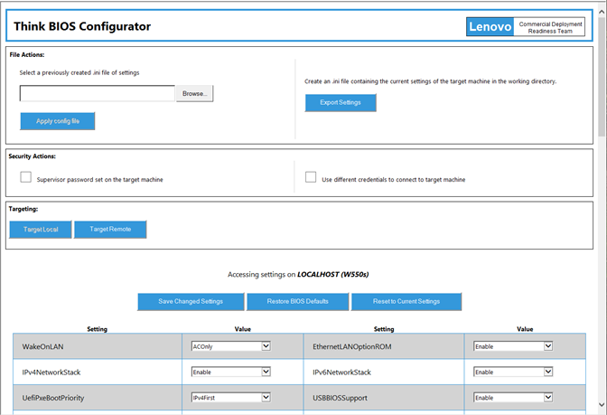
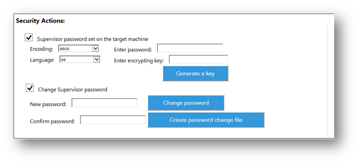
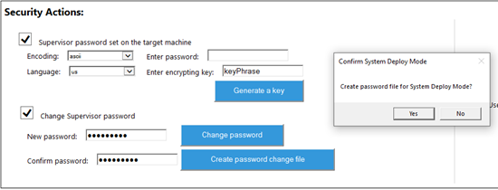
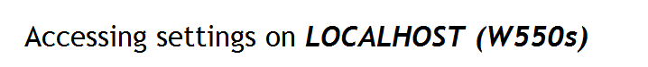
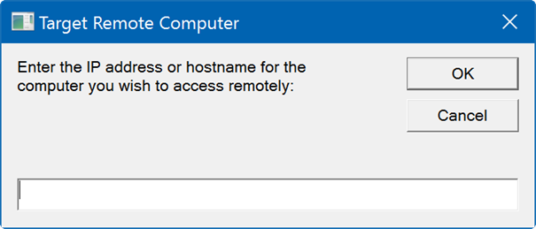
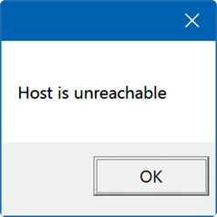
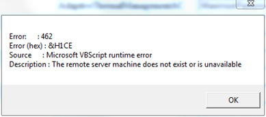
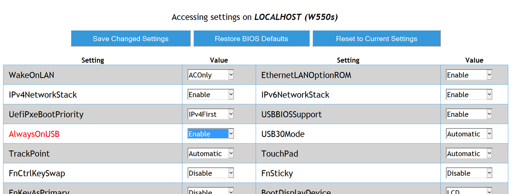
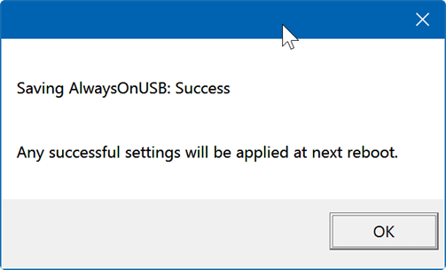
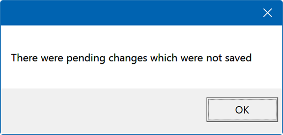

Think BIOS Config Tool#
Introduction#
The Think BIOS Configurator tool was developed using the WMI BIOS interface methods and the scripts located at this website to create a user friendly way of applying changes to the BIOS from within the Windows environment. This document will describe the ways the tool can be used and the various options it supports. The application needs no other files for execution. The application will read from WMI to provide the proper options for each of the available settings.
Note
Not all BIOS settings are exposed through the WMI interface. This tool will list only the settings that are configurable through WMI.
Standard Execution of the Application#
This tool is in the HTML application format (hta) so it can be portable and be used in lightweight versions of Windows like WinPE without needing additional libraries to run. When launched by a user in Windows, the application will attempt to relaunch itself with administrative privileges which causes a User Account Control dialog to be displayed with the Program Name of "Microsoft (R) HTML application host" and the Verified Publisher as "Microsoft Windows". This occurs because access to the WMI BIOS Settings interface requires administrative privileges on the system and there is no "Run as Administrator" option for .HTA files. After approving the UAC prompt, the application window will appear. Below is an example of what a standard execution of the application will look like:

File Actions#
-
At the top of the application screen is the File Actions section. On the left it is possible to browse to and select an .INI file that was previously generated by this program. Once selected, click Apply Settings File to make any changes detected in the .INI file. All the settings are read into the potential changes and then compared to the current settings of the machine. Only those that are different will be applied. A dialog box is displayed once the import is completed showing the settings that were successfully changed. This feature is also available via command line which is discussed in the Execution via Command Line section.
On the right, an .INI file of the current settings can be generated simply by clicking Export Settings. The file will be generated in the working directory the application is launched from. The file will be named \
Config.ini where \ is the text inside the parenthesis above the Settings Table. The settings that are exported are the current settings of the machine AND the pending changes to the machine. This is done to allow the user to create these files without having to commit changes to the machine. The created file has an optional first line if there is a supervisor password and the remaining lines are of the form key,value. If there is a supervisor password on the machine the application will include it based on the details provided in the Security Actions sections below.
Security Actions#
-
If settings are being changed on a system where a BIOS Supervisor Password has been set, the Security Actions section provides the ability to provide the necessary password details. Select the check box next to Supervisor password set on the target machine to expand the user interface to show input fields for the password details as shown below. If a password is detected on the machine, the first checkbox will automatically be checked.

Encoding can be either "ascii" or "scancode" and language is either "us", "fr", "gr". In most cases, the user should only have to supply the password and leave the other fields as they are. The password box is for the Supervisor password on the targeted machine. The encrypting key box is only used if the Export Settings function will be used to capture the settings of this targeted machine into an .INI file. A random 16 character string can be generated or the user can create their own personal encryption key using characters from this set: a-z, A-Z, 0-9. Do not use any punctuation or special characters. This will allow the Supervisor password to be encrypted using xxTEA in the .INI file, which is simply plain text. The encrypting key would be used later when the tool is used to apply the settings in the .INI file.
Under the first security action section is the area to change the current supervisor password. By providing the new password, the user can click the Change password button to change the current machine’s password or click the Create password change file button to generate a file to change the password on multiple machines. If you want to clear the password from the machine just leave the new password fields blank. The generated password file will contain the previous password and the new password encrypted with the encrypting key that is provided above.
Warning
The user CANNOT set a supervisor password.
Now on updated Whiskey Lake ThinkPads, administrators can set a supervisor password using System Deployment Boot Mode (boot to device list and press ‘delete’). In this one-time boot environment, a password change file can be used to set the supervisor password for the machine. To create a specialized System Deployment Boot Mode password file, leave the current supervisor password field blank and fill in the other information for a password change file.

On the right side of the Security Actions section the user can select the check box next to Use different credentials to connect to target machine to expand the user interface to show additional input fields. When connecting to a remote machine over the network, a username and password for a local administrator account of the targeted machine must be supplied. On a domain network, the username may need to be in the format of "\
\\ ". Warning
The user CANNOT use different credentials when targeting the local machine.
Logging#
- A text file will be created using the machine type and serial number to uniquely identify the machine the tool is running on. A list of transactions and results of applying settings will be written to the file.
Targeting#
-
By default the application will attempt to load the settings of the local machine when it launches. The address and model of the machine whose settings are being displayed will be displayed above the Settings table, such as:

If you would like to target another remote machine on the network, click Target Remote and the dialog below will be displayed.

If the host is unreachable, the application will gracefully display that information.

If the WMI service is unavailable on the target machine or the application is denied access another message box will come up and provide an error message similar to below. Once this dialog is acknowledged, the application will refresh with the information on the local machine.

Once connected to the remote computer, the screen will refresh with the data that is on that machine. To switch back to the local machine, just click the ‘Target Local’ button, which is only enabled if the application is accessing a remote machine.
Settings Table#
-

The Settings Table displays the current settings of the target machine. As seen above, each setting has an associated value column which can be changed easily. Most settings are in the form of dropdown boxes but options like ‘BootOrder’ have more complex options to select the new value of the setting. If the user makes any changes, the text of the setting name will be changed to red (as seen above with the AlwaysOnUSB setting) to signify that it is a value different than what is currently set on the computer.
Once all the required changes have been set, click Save Changed Settings and the application attempts to commit the changes to the machine. Only the settings that are pending change are attempted to be saved to save time and eliminate any issues with trying to commit a setting will the same value. This is what will be displayed after the button is clicked:

As seen above, the application was successful in setting one setting. Error messages are provided in the case of a failure. More than likely, the error users will see will be ‘Access Denied’.
Note
All settings will only take affect once the computer is restarted.
If settings have been changed in the application but not applied to the machine and the user wants to revert back to the original settings, click Reset to Current Settings. The user will see the items that were previously marked in red text will be reverted back to black text and the values reset to their original settings. This is a quick way for the user to create multiple configuration files and revert back to the settings they had already saved.
If a user closes the application with changes pending, a message will be displayed that there were pending changes. Unfortunately, there is a bug in Microsoft’s code that makes it so the closing of the application cannot be stopped once it is started.

The Restore BIOS Defaults button applies factory default values to the settings.
Note
Not all BIOS settings are affected by the BIOS defaults change and varies by product. If the button is clicked, a warning prompt will be shown to confirm the user wishes to do that.
Execution via Command Line#
This was a very important feature when developing this application. By having command line execution of the application, the user can use this in deployment situations. When used in this fashion, the application will flash briefly and suppress all notifications. All command line parameters must be enclosed in quotation marks and have the following format: "switch=key,value". There are no spaces around the equals sign. There are several switches that are supported. Order does not matter but parameters are processed from left to right. Therefore if for some reason the user provides any switch more than once the last one will be the one the application uses. If the user passes both the ‘config’ and ‘file’ switch in one command, the ‘file’ switch will take precedence over the ‘config’.
File Switch#
-
To apply a configuration or password file via the command line, the user would want to use the ‘file’ switch. The configuration file can be described either by a full path or just the name if it is located in the same folder as the application itself. Just like the ‘Apply config file’, all the settings will be processed and applied if they are different than the current settings on the machine.
Example:
Config Switch#
-
To apply a single configuration change, the user would want to use the "config" switch. This switch is mainly used for when the user wants to change just one setting and using a configuration file would be too much overhead.
Example:
Pass Switch#
-
This switch is used in conjunction with both ‘file’ and ‘config’. If there is a supervisor password on the target machine, the application needs this information to apply the settings.
In the case of the ‘file’ switch, the application will be expecting the encryption key that was used when creating the configuration file if the password was encrypted and stored in the file or the supervisor password itself. If there is an encrypted string at the beginning of the file, the application will attempt to decrypt the first line of the configuration file to retrieve the supervisor password that is stored in the file.
Note
This option must be used with a password file.
Example
In the case of the ‘config’ switch, the application will be expecting the supervisor password itself. This will be passed to the application to save the setting properly.
Example:
Also if working with a different language than ‘US’ the user can enter their language along with the password in the following format (example demonstrates French password).
Example
Remote Switch#
-
The remote feature allows the user to set the target computer before the application displays the first settings. This can be used in two ways: set the target computer and open the GUI or set the target computer and apply a command line switch to it. To set the target computer for the GUI, only include the ‘remote’ switch.
Example:
To apply a command line switch to the remote machine, just use the previously described switches. Remember order of the switches does not matter. Example:
Log Switch#
-
Use this switch to control where the log file should be written to. By default, a log file with the name of machineType_serialNumber.txt will be created in the current directory with the tool.
Example:
NoLog Switch#
-
Use this switch to prevent the log file from being created or written to. The switch is case insensitive.
Example:
Default Switch#
-
Use this switch to apply the default settings to a computer quickly. The only parameter for this setting is a case insensitive "true". Only when it is provided will the settings be reset. No actions will be taken if any other string is provided.
Example:
Help Switch#
-
Shows a list of the most recent changes to the tool. Example:
Deployment Situations#
This application can be used in a deployment environment like MDT or Configuration Manager as long as support for HTA/HTML is enabled (MDT boot images provide this by default, ConfigMgr needs to have the feature enabled). The application must be called after the disk has been partitioned. In testing, placing the command during the Post-Install step seems like a good place. Also remember that a restart is required to apply the settings.
Example code for a task sequence step:
Note
The cmd.exe /c is needed 9 out of 10 times when running as a Local System account. In some cases it isn’t necessary but for consistency it is recommended.
Troubleshooting#
If a supervisor password exists and you know you are typing in the correct password but are receiving ‘Access Denied’ errors, restart the machine. You may have exceeded the allowed attempts. The tool will validate the password to prevent exceeding the number of allowed attempts.
M910x has a slightly different ‘Load Defaults’ functionality. Once it is completed, you will no longer be able to see the settings until after a reboot.
Executing ThinkBiosConfig.hta under Powershell requires special attention when command line parameters are used. To pass the desired switches, Powershell needs them inside single quotes.
Example:
ThinkBiosConfig.hta '"help"'
ThinkBiosConfig.hta '"file=C:\W550sConfig.ini"' '"pass=myEncryptionKey"'
When using the Config switch, pay close attention to the exact values that can be used for each setting. For example, settings on a ThinkPad may use "Enable" whereas on a ThinkCentre the value is "Enabled". If the correct string is not used then you may see "Invalid parameter" errors.